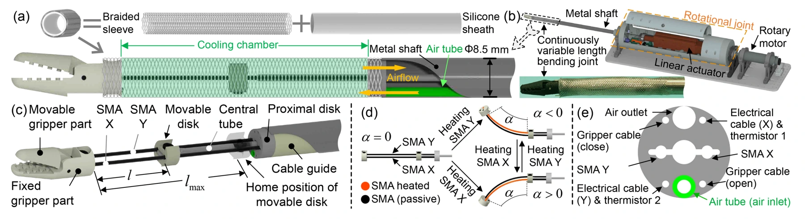

Active cooling for miniature shape memory alloy bending joints
Pre-cooled air flows through a flexible sleeve to shorten the time a miniature surgical joint needs to cool.

I developed a heat-transfer model for an antagonistic pair of shape memory alloy wires and tested it under different heating and airflow conditions. A flexible, two-layer sleeve carries pre-cooled compressed air through the joint while keeping its outer diameter at 8.5 mm. In bench tests, the active-cooling system reduced cooling time from 80.8 s in the fan-cooled baseline to 1.6 s. The joint reached a −3 dB bandwidth of 1.5 Hz for a ±5° input.